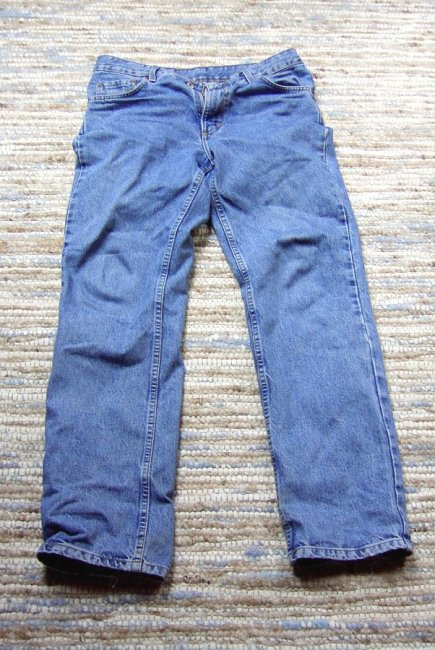

Guyheadd is a brand that specializes in creating comfortable jeans for everyone, why we choose to venture into jeans, is that this peices of clothing that is very much undermineded, it can still be stylish, it can be worn as a evining outfit, that is paired with some formal pieces of clothing such as blazer and a shoe( either a heel for the ladies and a chelsea boots fort he gents) it can also be worn with as casual outfit, paired with a tshirt and some comfortable shoes, and a summer hate, this piece of clothing is an all year rounder, it can be worn during all 4 seasons of the year. with the guyheadd jeans you can wear them even when its raining and not wear anything underneath to keep warm during the harsh winter winds and rains.
the first pair of blue jeans where made by Levi Strauss on the 20th of May 1873, this is where Guyheadd draws it inspiration from and drive from, we wanted to make proudly south african jeans for farmers, construction works and factory works, jeans that are comfortable and affordable, jeans that are made to stand the test of time the blue jeans are just the meer first step in creating something that can be worn by both males and females, jeans tend ot bring people together in our view, this how a family is created , it might the most simplest pice of clothing to own, but it does bring people together in a sense that people can wear and create themes, with the different types of blue jeans are being made and created.
